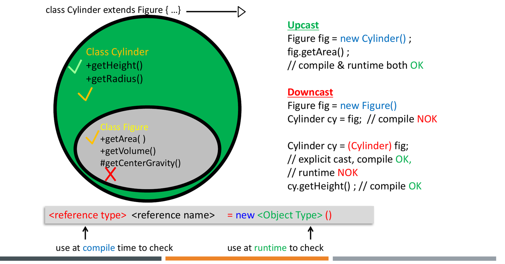

Writing distinct functions for every concrete subtype creates brittle architectures that break whenever new types are added. Polymorphism (“many forms”) allows a single interface or reference variable to manipulate objects of differing concrete types uniformly, decoupling high-level algorithmic logic from low-level implementation details.
In Java, polymorphism manifests in two distinct forms:
- Compile-Time Polymorphism (Static Binding / Method Overloading): The compiler determines exactly which method to execute during compilation based on method signatures and argument types.
- Runtime Polymorphism (Dynamic Binding / Method Overriding): The Java Virtual Machine determines which method implementation to invoke at runtime based on the actual object instance allocated on the heap.
1. Static vs. Dynamic Binding
Exam questions consistently probe the dividing line between compiler-enforced static resolution and JVM runtime dispatch:
| Feature | Static Binding (Early Binding) | Dynamic Binding (Late Binding) |
|---|---|---|
| Resolution Time | Compile time (by javac) |
Runtime (by JVM) |
| Mechanisms | Method overloading, static methods,
private methods, final methods, field
access |
Method overriding (instance methods) |
| Type Used | Compile-time reference type (the declared variable type) | Runtime object type (the concrete heap instance) |
| Performance | High; direct call instruction generated in bytecode | Small indirection overhead via Virtual Method Table (VTABLE) |
┌────────────────────────────────────────────────────────┐
│ Method Call: refVar.method(args) │
└───────────────────────────┬────────────────────────────┘
│
┌───────────────────────────┴────────────────────────────┐
▼ ▼
[Compile-Time Check] [Runtime Dispatch]
Compiler checks declared reference type. JVM inspects actual heap object.
1. Does the reference class define method? Dispatches to the most specialized
If NO -> COMPILE ERROR. overridden implementation.
2. Selects method signature (overload).2. Compile-Time Type vs. Runtime Type
In Java, every object reference variable operates under two distinct identities:
Animal a = new Dog(); // Declared reference type: Animal; Runtime object type: Dog- Declared Reference Type (Compile-Time Type):
Dictates what messages the object can receive. The
compiler allows only methods and fields declared in
Animal(or its superclasses) to be called througha. - Actual Object Type (Runtime Type): Dictates
how the object responds. When an instance method is
called, the JVM dispatches to the implementation provided by
Dog.
class Animal {
void makeSound() { System.out.println("Animal sound"); }
}
class Dog extends Animal {
@Override
void makeSound() { System.out.println("Dog barks"); }
void fetch() { System.out.println("Fetching..."); }
}
Animal a = new Dog();
a.makeSound(); // Prints "Dog barks" (Dynamically dispatched to Dog's method)
a.fetch(); // COMPILE ERROR: Animal reference type has no method fetch()!3. Field Hiding vs. Method Overriding
A critical exam trap: fields are NEVER dynamically dispatched in Java.
- Methods are overridden: Invoking an instance method always targets the runtime object type.
- Fields are hidden: When a subclass declares a field with the identical name as an inherited superclass field, it shadows / hides the parent field. Accessing the field via a reference variable resolves strictly to the compile-time reference type.
class SuperClass {
int value = 10;
void print() { System.out.println("Super: " + value); }
}
class SubClass extends SuperClass {
int value = 20; // Hides SuperClass.value
@Override
void print() { System.out.println("Sub: " + value); }
}
SuperClass obj = new SubClass();
System.out.println(obj.value); // Prints 10 (Resolved statically by reference type SuperClass)
obj.print(); // Prints "Sub: 20" (Resolved dynamically by runtime object SubClass)4. Reference Typecasting: Upcasting vs. Downcasting
Typecasting instructs the compiler to treat a reference variable as a different type within the inheritance hierarchy.

1. Upcasting (Subclass Superclass)
- Moving up the inheritance tree
(
Animal a = new Dog();). - Always safe and implicit. Every
Dogis guaranteed to be anAnimal. - Broadens generality while restricting access strictly to superclass members.
2. Downcasting (Superclass Subclass)
- Moving down the inheritance tree
(
Dog d = (Dog) a;). - Requires explicit cast syntax.
- May fail at runtime if the underlying heap object is not an instance of the target subclass.
The Two-Level Cast Validation
- Compile-Time Check: The compiler checks whether an inheritance relationship exists between the declared reference type and the target cast type. If they belong to unrelated branches of the hierarchy, the code fails to compile.
- Runtime Check: At runtime, the JVM checks the
actual heap object. If the actual object is not an instance of (or a
subtype of) the target class, the JVM throws
ClassCastException.
Animal a1 = new Dog();
Dog d1 = (Dog) a1; // LEGAL: Actual heap object is Dog
Animal a2 = new Cat();
Dog d2 = (Dog) a2; // COMPILES, but throws ClassCastException at runtime!
String s = (String) a1; // COMPILE ERROR: Animal and String have no inheritance relationship5. Safe Downcasting:
The instanceof Operator
To prevent unexpected ClassCastException failures, guard
explicit downcasts using instanceof:
Animal a = getAnimal();
// Pre-Java 16 idiom:
if (a instanceof Dog) {
Dog d = (Dog) a;
d.fetch();
}
// Java 16+ Pattern Matching idiom:
if (a instanceof Dog d) {
d.fetch(); // 'd' is automatically cast and scoped inside the block
}obj instanceof Typeevaluates totrueifobjis non-null and the runtime instance is an instance ofTypeor any of its subclasses.- If
objisnull,null instanceof AnyTypealways safely returnsfalse.
6. Dangerous Trap: Dynamic Dispatch in Superclass Constructors
When a superclass constructor invokes an instance method that is overridden in a subclass, the JVM dispatches to the subclass implementation.
However, because superclass constructors execute before
subclass instance field initializers (as established in Chapter 2), the
subclass method runs against uninitialized default
state (0, 0.0,
null)!
class Shape {
int x = 1;
public Shape() {
System.out.println("Shape constructor, area = " + area());
}
public int area() { return x * x; }
}
class Square extends Shape {
int x = 4; // Not yet initialized when Shape() executes!
public Square() {
System.out.println("Square constructor, area = " + area());
}
@Override
public int area() { return x * x; }
}
Shape s = new Square();Execution Trace:
- Memory allocated on heap for
Square; all fields set to default:Shape.x = 0,Square.x = 0. Shape()constructor executes:Shape.xinitialized to1.Shape()callsarea(). Because the runtime instance isSquare, dynamic binding invokesSquare.area().- Inside
Square.area(),Square.xhas not yet initialized; it holds default0.0 * 0returns0. Prints:Shape constructor, area = 0 Shape()completes. Control returns toSquare:Square.xinitialized to4.Square()constructor executes and callsarea(): returns4 * 4 = 16. Prints:Square constructor, area = 16
7. Tracing Toolkit: The 2-Step Exam Method Resolution Algorithm
When tracing method calls like refVar.method(arg) in
exam questions, follow this exact deterministic protocol:
Step 1: Compile-Time Verification (Look strictly at refVar's DECLARED type)
├── Does refVar's class (or its superclasses) declare method(arg)?
│ NO ──► COMPILE-TIME ERROR (Halt trace)
│ YES ──► Record the specific method signature chosen by compiler.
└── Is it a field access (refVar.x)?
YES ──► Evaluate refVar's declared class field value (Halt trace).
Step 2: Runtime Dynamic Dispatch (Look strictly at the ACTUAL heap object)
├── Is the chosen method private, static, or final?
│ YES ──► Static binding: execute the version in refVar's declared class.
│ NO ──► Dynamic binding: inspect actual runtime object.
│ Has the runtime object class overridden that specific signature?
│ YES ──► Execute subclass overridden method.
│ NO ──► Ascend hierarchy to find the nearest implementation.8. Tutorial and Exam Practice
Wooclap Check: Static Field Binding vs. Dynamic Method Dispatch
Question: What is the exact terminal output of the following program?
class A {
int x = 1;
public void print() {
System.out.println("A: " + x);
}
}
class B extends A {
int x = 2;
public void print() {
System.out.println("B: " + x);
}
}
public class Test {
public static void main(String[] args) {
A obj = new B();
System.out.println(obj.x);
obj.print();
}
}A. 1 then A: 1
B. 1 then B: 2
C. 2 then A: 1
D. 2 then B: 2
Solution:
A obj = new B();declares reference variableobjof compile-time typeA, pointing to a runtime heap instance ofB.System.out.println(obj.x);:- Field access is statically resolved at compile time according to the
reference type
A. A.xis1.- Prints:
1.
- Field access is statically resolved at compile time according to the
reference type
obj.print();:- Method invocation is dynamically bound at runtime according to the
concrete object type
B. Boverridesprint(), which references its own fieldx = 2.- Prints:
B: 2.
- Method invocation is dynamically bound at runtime according to the
concrete object type
Final Output:
1
B: 2Final Answer: B
Wooclap Check: Subclass Method Invocation via Superclass Reference
Question: What occurs when the following code is compiled and executed?
class Animal {
void makeSound() {
System.out.println("Animal sound");
}
}
class Dog extends Animal {
void bark() {
System.out.println("Dog barks");
}
}
public class Main {
public static void main(String[] args) {
Animal a = new Dog(); // Line 1
a.makeSound(); // Line 2
a.bark(); // Line 3
}
}Solution:
- Line 1:
Animal a = new Dog();is a valid implicit upcast. - Line 2:
a.makeSound();compiles becauseAnimaldeclaresmakeSound(). At runtime, it dispatches toAnimal.makeSound()(not overridden inDog), printing"Animal sound". - Line 3:
a.bark();fails compilation. The compiler inspects the declared reference typeAnimal.Animalhas nobark()method. The compiler does not look at the runtime object.
Final Answer: Compilation error at Line 3
Tutorial 5 Q1/Q2: Typecasting and ClassCastException Verification
Question: Given the inheritance hierarchy where
ClassC extends ClassA, ClassD extends ClassC,
and ClassG extends ClassA:
Evaluate the compile-time and runtime outcome of each code fragment:
ClassA a = new ClassC(); ClassG g = (ClassG) a;ClassC c = new ClassD(); ClassE e = c;(whereClassE extends ClassCis an unrelated sibling ofClassD)Animal a = new Animal(); if (a instanceof Dog) { Dog d = (Dog) a; d.bark(); } else { System.out.println("Not a Dog"); }
Solution:
ClassA a = new ClassC(); ClassG g = (ClassG) a;:- Compile-time: Compiles without error. Both
ClassCandClassGare subclasses ofClassA, so a reference of typeClassAcould theoretically hold aClassGinstance. - Runtime: Throws
ClassCastException. The actual heap object isClassC, which cannot be cast to sibling typeClassG.
- Compile-time: Compiles without error. Both
ClassC c = new ClassD(); ClassE e = c;:- Compile-time: Compilation error.
Implicit downcasting from superclass
ClassCto subclassClassEis forbidden without an explicit cast. Even with(ClassE) c, it would fail at runtime withClassCastExceptionbecause the actual object isClassD.
- Compile-time: Compilation error.
Implicit downcasting from superclass
Animal a = new Animal(); if (a instanceof Dog) ...:apoints to an actualAnimalobject.a instanceof Dogevaluates tofalse.- The
elsebranch executes, printing:Not a Dog.